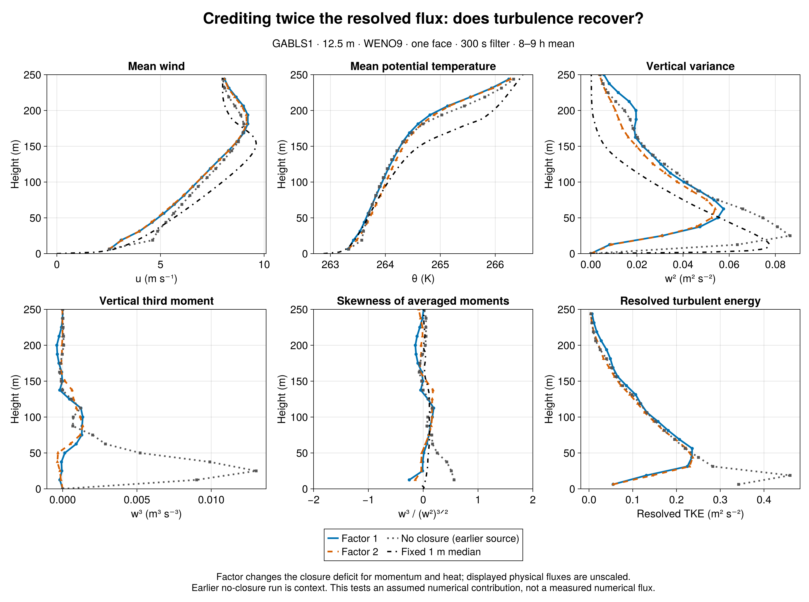
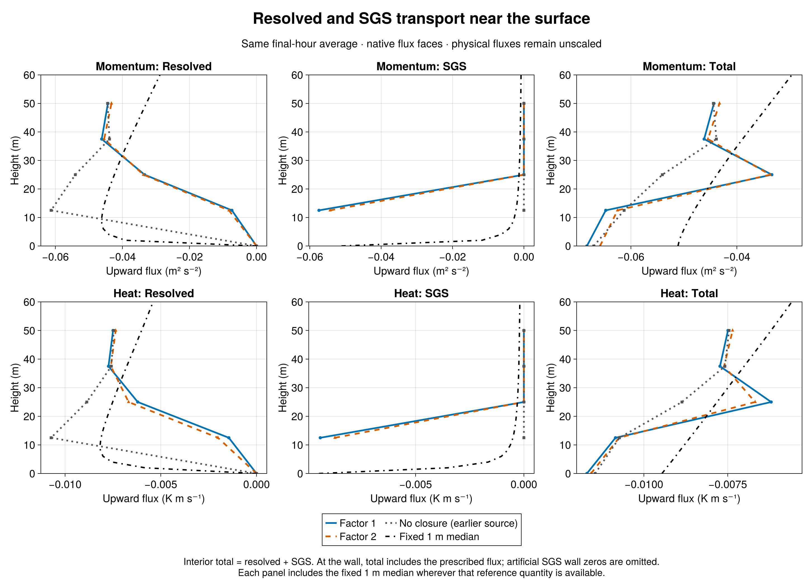

Matched sensitivity | 21 September 2026 | GABLS1, 12.5 m, WENO9, one interior face, 300 s filter, 9 h, one seed.
Result: crediting twice the resolved transport reduces the added diffusivity, but does not restore resolved turbulence. In the final hour, first-level w² rises 7.1%, while peak w² falls 6.3% and vertically integrated resolved TKE falls 6.4%. Both factors remain far below the earlier no-closure near-wall variance.
The intervention: factor a multiplies only the signed local filtered resolved flux inside the closure deficit max(0, 1 - a Fresolved/Ftarget). The same factor is used for momentum and heat. Factor 2 assumes an additional numerical flux equal and aligned with resolved transport. It neither doubles viscosity nor rescales diagnostic fluxes. The experiment does not measure numerical transport or establish that assumption.
Mechanism: final-hour first-face viscosity falls from 1.321 to 1.118 m²/s (15.4%); heat diffusivity falls from 1.216 to 0.774 m²/s (36.3%). The first-face SGS share of u-momentum transport remains large: 88.7% versus 86.8%. Reduced closure coefficients therefore produce only a modest change in the resolved/SGS partition.
Moments: at 12.5 m, w² changes from 0.008171 to 0.008754 m²/s², versus 0.06353 without interior closure. The third moment changes from -1.872e-4 to -1.186e-4 m³/s³, and skewness from -0.253 to -0.145. Skewness is the ratio of hourly averaged moments, not an average of instantaneous skewness.
Mean profiles and exchange: u* falls from 0.2886 to 0.2831 m/s and sensible heat flux changes from -15.54 to -15.38 W/m². Against the fixed 1 m median at native heights 0<z<=200 m, final-hour RMS errors change by +0.3% for u, -9.2% for theta, and -7.3% for w². Smaller profile errors coexist with lower resolved energy; they do not demonstrate restored turbulence.
Hour sensitivity matters: in 7–8 h, first-level w² instead falls 5.1%, integrated TKE falls 10.4%, and the temperature-profile error increases 8.0%. Peak variance and integrated energy decrease in both windows. The near-wall variance increase and temperature improvement in the last hour are not consistent across the two hours. One seed and neighboring hours do not provide an uncertainty estimate.
Comparison integrity: two fresh cases passed strict admission with matching source, grid, seed, initialization and exact 19-profile/541-series schedules. The factor-1 run reproduces every exported profile and time-series value from corrected array 7293's one-face300 case bit for bit. Native physical flux partition, support and coefficients were checked. Fixed 1 m medians are LES references, not observations.
Execution provenance: both model children completed 32400 s and exited zero. Slurm nevertheless marked the factor-2 batch exit as one. A separate harmless login-shell probe reproduces that pattern through failing clearconsole in .bashlogout under set-e; actual batch shell depth was not recorded. The discrepancy and canceled downstream job are preserved. Admission relies on independently complete outputs, durable child exits, matching sources and logs, not a relabeled scheduler success.
Conclusion: this factor-2 test changes coefficients and exchange modestly, but provides no evidence of broad turbulence recovery. It does not identify the numerical flux or establish a calibrated correction factor. All earlier DYCOMS, GABLS1 and SurfaceLayerDiffusivity results remain in the master report. GABLS3's separate humidity-boundary validation is still pending; no new GABLS3 science is included.
| Final-hour quantity | Factor 1 | Factor 2 |
|---|---|---|
| First-face w² (m²/s²) | 0.0081706 | 0.008754 |
| First-face w³ (m³/s³) | -0.0001872 | -0.00011863 |
| First-face skewness | -0.25347 | -0.14484 |
| Integrated resolved TKE (m³/s²) | 27.26 | 25.513 |
| u* (m/s) | 0.2886 | 0.28306 |
| Surface sensible heat (W/m²) | -15.538 | -15.384 |
| First-face viscosity (m²/s) | 1.3212 | 1.118 |


Detailed numerical comparison · Complete metrics · Julia audit · Julia plots · Collection manifest · Scheduler provenance
Sources: Breeze 1df78f2, evaluation ec714e5. GPU validation7330 passed7,924 checks; scientific array7331 admitted2/rejected0. Numerical flux remains unmeasured.